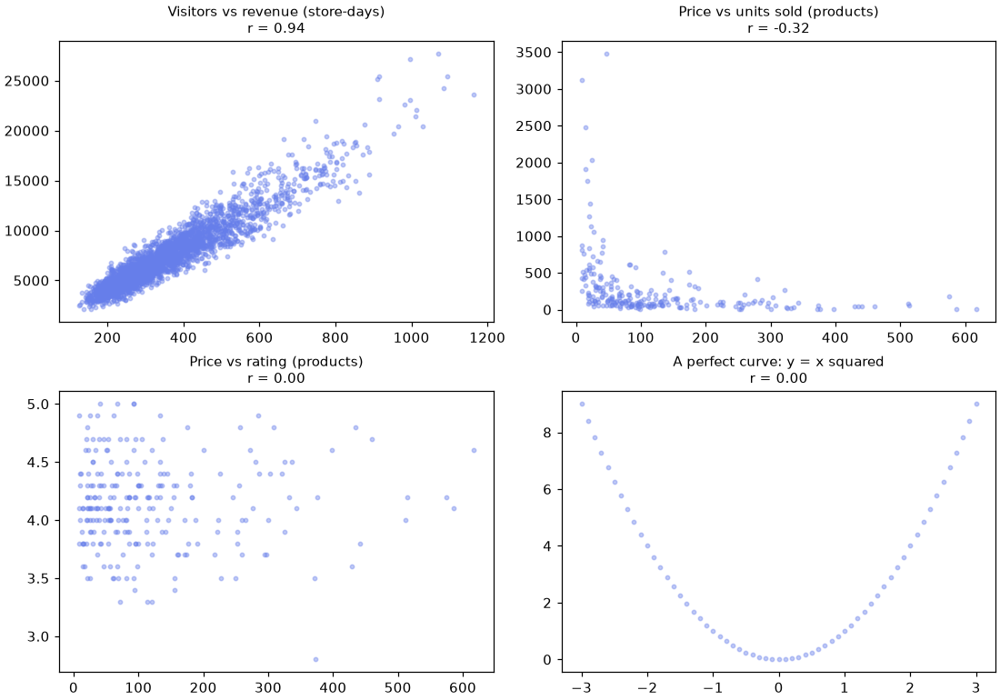
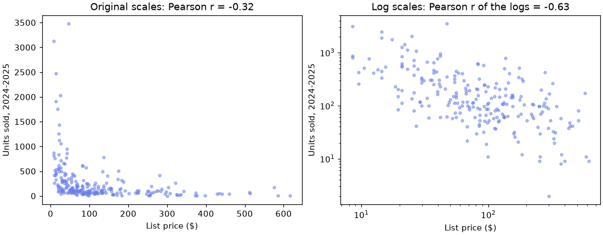
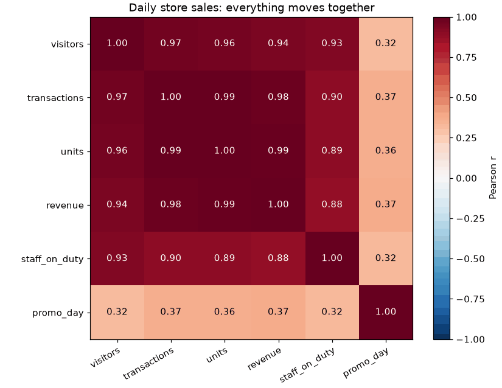
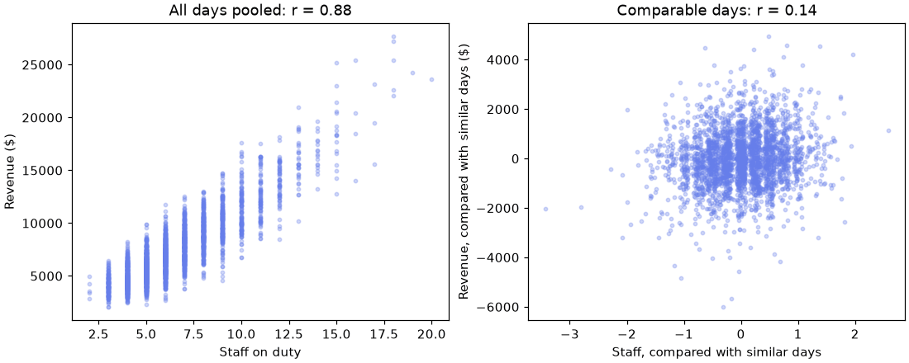
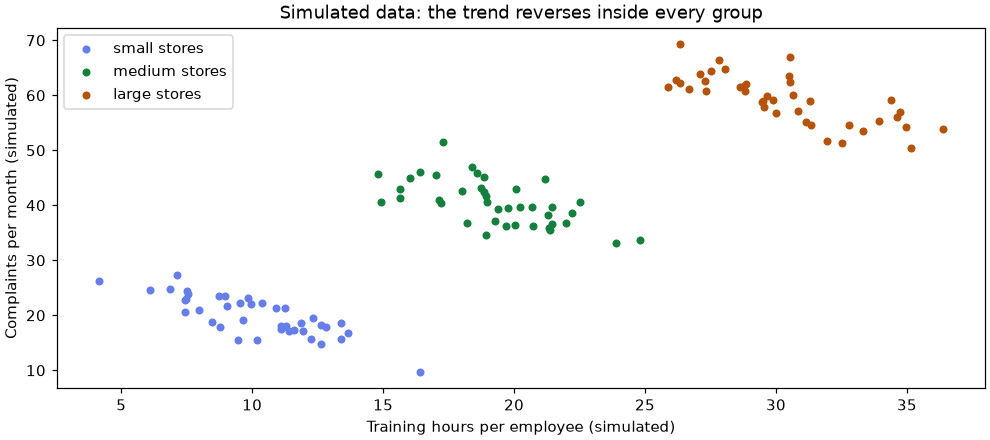
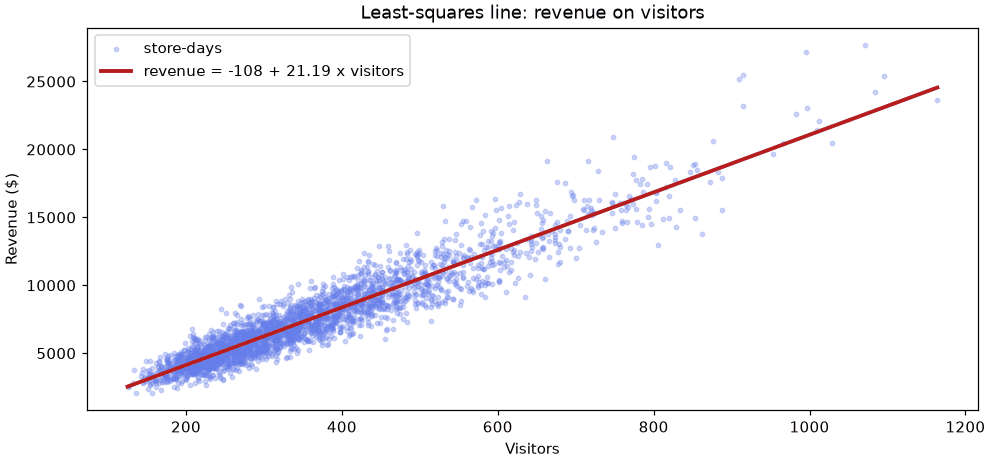
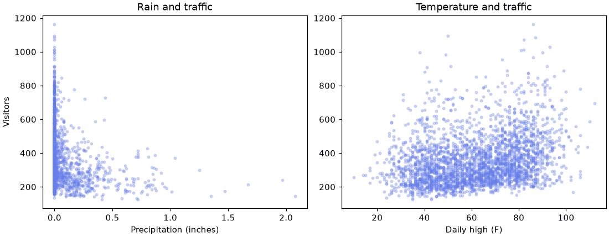

🔗 Lesson 4.4: Correlation Analysis
Measure how two columns move together, see the relationship before you trust the number, and learn from a real example in the Pinecrest data why a strong correlation can point to exactly the wrong decision.
🎯 Learning Objectives
By the end of this lesson, you will be able to:
- Read direction, form and strength from a scatter plot, and explain why the plot comes before the number
- Compute Pearson and Spearman correlations with pandas and scipy, and choose between them
- Build a correlation matrix and draw it as an annotated heatmap with Matplotlib
- Identify a confounding variable and test for it by comparing like with like
- Fit and interpret a simple regression line, and state what it does and does not tell you
In This Lesson
👀 The Picture Comes First
Every lesson in this module so far has looked at one column at a time. Most interesting questions involve two. Do busier days bring more revenue? Do cheaper products sell more? Do happier customers recommend the store? Correlation is the tool for "do these two things move together?", and it is one of the most used and most misused ideas in data analysis.
💡 Mental Model: Two Dancers
Watch two people on a dance floor. If they step forward and back together, they are positively correlated. If one steps forward whenever the other steps back, negatively. If each moves with no regard for the other, uncorrelated. Correlation measures how well their movements are synchronized. It says nothing about why: one may be leading, or both may be following the same music.
The right first move with two numeric columns is always the same: draw a scatter plot. One point per row, one variable on each axis. Then read three things from it.
- Direction: does the cloud rise to the right (positive), fall (negative), or neither?
- Form: is it a straight band, a curve, or clusters?
- Strength: how tightly do the points hug that form?
Load the data and prepare two tables: the daily store sales (dropping the six store-days with no revenue recorded), and a per-product table with the total units each product sold.
import numpy as np
import pandas as pd
import matplotlib.pyplot as plt
from scipy import stats
pd.set_option("display.width", 150)
pd.set_option("display.max_columns", 20)
daily = pd.read_csv("data/daily_sales.csv", parse_dates=["date"])
sales = daily.dropna(subset=["revenue"]).copy()
products = pd.read_csv("data/products.csv")
items = pd.read_csv("data/order_items.csv")
units_sold = items.groupby("sku")["quantity"].sum().rename("units_sold")
catalog = products.merge(units_sold, on="sku") # the 234 products that have sold
print(sales.shape, catalog.shape)Output
(2897, 8) (234, 14)Here are four relationships, each with the correlation coefficient r you will learn to compute in the next section. Before reading the numbers, look at the shapes.
curve_x = np.linspace(-3, 3, 61)
curve_y = curve_x ** 2
panels = [
(sales["visitors"], sales["revenue"], "Visitors vs revenue (store-days)"),
(catalog["price"], catalog["units_sold"], "Price vs units sold (products)"),
(catalog["price"], catalog["rating"], "Price vs rating (products)"),
(pd.Series(curve_x), pd.Series(curve_y), "A perfect curve: y = x squared"),
]
fig, axes = plt.subplots(2, 2, figsize=(10, 7), layout="constrained")
for ax, (x, y, title) in zip(axes.flat, panels):
ax.scatter(x, y, s=8, alpha=0.4, color="#667eea")
r = round(x.corr(y), 2) + 0 # adding 0 turns a rounded -0.0 into 0.0
ax.set_title(f"{title}\nr = {r:.2f}", fontsize=10)
plt.show()
Two of these four panels are warnings. The top right shows a clear pattern (cheap products sell in far greater numbers) that earns a feeble -0.32. The bottom right shows a relationship with no scatter at all that earns exactly 0. The number r measures one specific thing, and you need the picture to know whether that thing is what your data is doing.
📐 Pearson's r
The standard correlation coefficient is Pearson's r. It measures the strength and direction of a straight-line relationship between two numeric variables, on a scale from -1 to +1.
| r | Meaning |
|---|---|
| +1 | All points on a rising straight line |
| around +0.9 | A tight rising band |
| around +0.5 | A loose rising cloud |
| 0 | No straight-line trend (which is not the same as no relationship) |
| negative | The same, falling instead of rising |
What r Is Made Of
You already have the ingredients. Convert both columns to z-scores (Lesson 4.2), multiply them row by row, and average. On a day when visitors and revenue are both above their means, both z-scores are positive and the product is positive. Both below: negative times negative, positive again. One above and one below: negative. If the two columns tend to be on the same side of their means together, the products are mostly positive and so is their average.
x, y = sales["visitors"], sales["revenue"]
zx = (x - x.mean()) / x.std()
zy = (y - y.mean()) / y.std()
r_by_hand = (zx * zy).sum() / (len(x) - 1)
print("by hand :", round(r_by_hand, 4))
print("pandas .corr() :", round(x.corr(y), 4))
print("np.corrcoef :", round(np.corrcoef(x, y)[0, 1], 4))
print("scipy pearsonr :", round(stats.pearsonr(x, y).statistic, 4))Output
by hand : 0.9435
pandas .corr() : 0.9435
np.corrcoef : 0.9435
scipy pearsonr : 0.9435Four routes, one number: r = 0.94 between visitors and revenue. In daily work use series.corr(other). np.corrcoef returns a 2×2 table, of which you want the off-diagonal entry. stats.pearsonr returns a result object; its .statistic is r. (It also carries a .pvalue, which addresses whether an r could plausibly be a chance pattern in data with no real relationship. That question belongs to Lesson 4.5. Here you will describe r and what it means.)
Because r is built from z-scores, three properties follow at once:
- It has no units. Measure revenue in dollars, cents or euros and r is the same.
- It is symmetric. The correlation of visitors with revenue equals the correlation of revenue with visitors.
- It is not robust. It is made from means and SDs, so a few extreme points can drag it up or down.
print(round(x.corr(y * 100), 4)) # revenue in cents
print(round(y.corr(x), 4)) # the other way aroundOutput
0.9435
0.9435⚠️ r Is Not a Slope and Not a Percentage
r = 0.94 does not mean revenue rises 94 cents per visitor, and r = 0.5 does not mean "50% related". It measures how tightly the points cluster around a straight line, not how steep that line is. You will get the slope from a regression line at the end of this lesson.
🪜 Spearman: Correlation of Ranks
Back to the puzzling panel: price against units sold, r = -0.32. The relationship is obviously stronger than that. It is just not straight.
Spearman's rank correlation (written ρ, "rho", or rs) asks a looser question: as one variable goes up, does the other consistently go up (or down), whether or not along a straight line? Such a relationship is called monotonic. The method is simple: replace each value by its rank (1 for the smallest, 2 for the next, and so on) and compute Pearson's r on the ranks.
price, units = catalog["price"], catalog["units_sold"]
print("Pearson :", round(price.corr(units), 3))
print("Spearman :", round(price.corr(units, method="spearman"), 3))
print("Pearson on ranks :", round(price.rank().corr(units.rank()), 3))
print("scipy spearmanr :", round(stats.spearmanr(price, units).statistic, 3))Output
Pearson : -0.319
Spearman : -0.6
Pearson on ranks : -0.6
scipy spearmanr : -0.6Spearman reports -0.60, nearly twice as strong as Pearson's -0.32, and line three confirms that it is nothing more than Pearson on the ranks. When the two disagree like this, the message is: there is a consistent relationship, and it is curved. A plot on logarithmic axes shows the curve straightening out.
fig, (ax1, ax2) = plt.subplots(1, 2, figsize=(10, 3.9), layout="constrained")
ax1.scatter(price, units, s=10, alpha=0.5, color="#667eea")
ax1.set_title(f"Original scales: Pearson r = {price.corr(units):.2f}")
ax2.scatter(price, units, s=10, alpha=0.5, color="#667eea")
ax2.set_xscale("log")
ax2.set_yscale("log")
ax2.set_title(f"Log scales: Pearson r of the logs = {np.log(price).corr(np.log(units)):.2f}")
for ax in (ax1, ax2):
ax.set_xlabel("List price ($)")
ax.set_ylabel("Units sold, 2024-2025")
plt.show()
Choosing Between Them
| Pearson r | Spearman ρ | |
|---|---|---|
| Measures | Straight-line association | Monotonic association (consistently up or down) |
| Uses | The values | The ranks of the values |
| Extreme values | Sensitive | Robust (the largest value is just "rank n") |
| Ordinal data (1-to-5 scales) | Assumes equal steps | Appropriate: needs only order |
| Reach for it when | The scatter is a straight band without extreme points | The scatter is curved, skewed or has outliers, or the data is ordinal |
Ordinal data is the other natural home for Spearman. In Lesson 4.2 you treated the survey's 1-to-5 answers as ordered categories. Ranks need only order, so Spearman is the honest choice for "do customers who are more satisfied overall also give a higher recommendation score?"
survey = pd.read_csv("data/survey.csv")
both = survey[["sat_overall", "recommend"]].dropna()
print("respondents who answered both:", len(both))
print("Spearman:", round(both["sat_overall"].corr(both["recommend"], method="spearman"), 3))Output
respondents who answered both: 1699
Spearman: 0.632A Spearman correlation of 0.63: satisfaction and willingness to recommend rise together, strongly but far from perfectly. (pandas drops rows where either answer is missing, which is why the count is worth printing.)
✅ A Good Habit
Compute both. If Pearson and Spearman are close, the relationship is roughly linear and either will do. If they differ noticeably, go back to the scatter plot: you have a curve or an influential point, and that is worth knowing either way.
🧮 Correlation Matrices and Heatmaps
With more than two columns, compute every pair at once. Calling .corr() on a DataFrame returns a correlation matrix: a square table with one row and one column per variable.
columns = ["visitors", "transactions", "units", "revenue", "staff_on_duty", "promo_day"]
corr = sales[columns].corr()
print(corr.round(2))Output
visitors transactions units revenue staff_on_duty promo_day
visitors 1.00 0.97 0.96 0.94 0.93 0.32
transactions 0.97 1.00 0.99 0.98 0.90 0.37
units 0.96 0.99 1.00 0.99 0.89 0.36
revenue 0.94 0.98 0.99 1.00 0.88 0.37
staff_on_duty 0.93 0.90 0.89 0.88 1.00 0.32
promo_day 0.32 0.37 0.36 0.37 0.32 1.00How to read it: the diagonal is all 1s (everything correlates perfectly with itself), and the table is a mirror image across the diagonal (r is symmetric), so only the lower triangle carries information. Pass method="spearman" for a rank-based matrix.
A table of 36 numbers is hard on the eyes. A heatmap colors each cell by its value. Matplotlib's imshow draws the grid; the two loops write the number in each cell. Two choices matter: a diverging colormap (two colors meeting at a neutral middle), and fixing the color scale at -1 to +1 so that zero is always the neutral color.
fig, ax = plt.subplots(figsize=(7.5, 5.8), layout="constrained")
image = ax.imshow(corr, cmap="RdBu_r", vmin=-1, vmax=1)
ax.set_xticks(range(len(columns)), labels=columns, rotation=30, ha="right", rotation_mode="anchor")
ax.set_yticks(range(len(columns)), labels=columns)
for i in range(len(columns)):
for j in range(len(columns)):
value = corr.iloc[i, j]
ax.text(j, i, f"{value:.2f}", ha="center", va="center",
color="white" if abs(value) > 0.6 else "black")
fig.colorbar(image, ax=ax, label="Pearson r")
ax.set_title("Daily store sales: everything moves together")
plt.show()
The first five variables form a solid block of very high correlations. That is not five discoveries. It is one fact seen five ways: some days are busier than others, and on a busy day everything is higher. Visitors come in, a share of them buy, each purchase has units and dollars. When a whole block of variables rises and falls together, look for the common driver behind them before reading meaning into any single pair. One cell in that block deserves a much closer look.
🕵️ The Staffing Puzzle: A Real Confound
The correlation between staff_on_duty and revenue is 0.88. Imagine that number arriving on an executive's desk with a chart.
staff, revenue = sales["staff_on_duty"], sales["revenue"]
line = stats.linregress(staff, revenue)
print("r:", round(staff.corr(revenue), 3))
print("average revenue with 4 staff :", round(revenue[staff == 4].mean()))
print("average revenue with 8 staff :", round(revenue[staff == 8].mean()))
print("slope of the trend line :", round(line.slope), "dollars per extra staff member")Output
r: 0.882
average revenue with 4 staff : 4759
average revenue with 8 staff : 9109
slope of the trend line : 1154 dollars per extra staff memberDays with eight staff bring in nearly twice the revenue of days with four. The trend line says each additional person on the floor goes with about $1,154 more revenue. A staff member costs far less than that per day. The proposal writes itself: schedule more staff, sell more.
(If you did the stretch exercise in Lesson 1.5, you have met this number and a first hint that it is not what it seems. Here is the full investigation.)
Before anyone acts on it, ask the question that should follow every correlation: how did this data come to be? The data dictionary gives the answer in five words. staff_on_duty is "scheduled in advance". Managers do not roll dice to staff the store. They look at the calendar, see a Saturday in a sale weekend, and schedule more people because they expect a busy day.
Expected demand (the weekday, the season, a promotion, the size of the store) drives the staffing and drives the visitors who produce the revenue. A third variable that influences both of the variables you are correlating is called a confounder. It can create a strong correlation between two things even if neither has any effect on the other. Check whether the calendar really moves both:
sales["weekday"] = sales["date"].dt.day_name()
day_order = ["Monday", "Tuesday", "Wednesday", "Thursday", "Friday", "Saturday", "Sunday"]
by_day = sales.groupby("weekday")[["staff_on_duty", "visitors", "revenue"]].mean().loc[day_order]
print(by_day.round(1))
print()
print(sales.groupby("promo_day")[["staff_on_duty", "visitors", "revenue"]].mean().round(1))Output
staff_on_duty visitors revenue
weekday
Monday 5.3 290.5 6137.7
Tuesday 5.0 275.8 5716.1
Wednesday 5.2 285.6 5985.3
Thursday 5.5 303.6 6321.2
Friday 6.8 372.1 7713.0
Saturday 9.6 525.3 10932.9
Sunday 8.0 437.8 9211.4
staff_on_duty visitors revenue
promo_day
0 6.3 347.5 7211.7
1 10.8 604.0 13950.5Saturdays have the most staff, the most visitors and the most revenue. Tuesdays have the least of all three. Promotion days have 10.8 staff against 6.3 and nearly twice the revenue. The schedule and the sales are both following the calendar.
Test 1: Compare Like with Like
If staffing itself raises revenue, then among days that were expected to be equally busy, the days that happened to have an extra person should still sell more. So remove what the calendar explains. Group the days by store, month, weekday and promotion status: each group is a handful of days a manager would have expected to be alike (the Saturdays of one month at one store). Within each group, measure every day as a deviation from its group's average, for both staff and revenue. Then correlate the deviations.
sales["month"] = sales["date"].dt.to_period("M")
alike = sales.groupby(["store", "month", "weekday", "promo_day"])
sales["staff_dev"] = sales["staff_on_duty"] - alike["staff_on_duty"].transform("mean")
sales["revenue_dev"] = sales["revenue"] - alike["revenue"].transform("mean")
print("groups of comparable days:", alike.ngroups, " typical group size:", alike.size().median())
print("r, all days pooled :", round(staff.corr(revenue), 3))
print("r, within comparable days:", round(sales["staff_dev"].corr(sales["revenue_dev"]), 3))Output
groups of comparable days: 768 typical group size: 4.0
r, all days pooled : 0.882
r, within comparable days: 0.143From 0.88 to 0.14. Among comparable days, knowing that a day had more staff than usual tells you very little about whether it had more revenue than usual.
fig, (ax1, ax2) = plt.subplots(1, 2, figsize=(10, 4), layout="constrained")
ax1.scatter(staff, revenue, s=8, alpha=0.3, color="#667eea")
ax1.set_title(f"All days pooled: r = {staff.corr(revenue):.2f}")
ax1.set_xlabel("Staff on duty")
ax1.set_ylabel("Revenue ($)")
jitter = np.random.default_rng(42).uniform(-0.08, 0.08, size=len(sales))
ax2.scatter(sales["staff_dev"] + jitter, sales["revenue_dev"], s=8, alpha=0.3, color="#667eea")
ax2.set_title(f"Comparable days: r = {sales['staff_dev'].corr(sales['revenue_dev']):.2f}")
ax2.set_xlabel("Staff, compared with similar days")
ax2.set_ylabel("Revenue, compared with similar days ($)")
plt.show()
Test 2: Hold Visitors Constant
A second angle. The diagram says staff and revenue are linked through foot traffic. So ask: among days with the same number of visitors, does more staff go with more revenue? The tool is a partial correlation. Fit a straight line predicting staff from visitors and keep the leftovers (the residuals: actual minus predicted). Do the same for revenue. Then correlate the two sets of leftovers. What remains is the association between staff and revenue that visitors cannot account for.
def residuals(target, predictor):
"""What is left of target after removing its straight-line relationship with predictor."""
fit = stats.linregress(predictor, target)
return target - (fit.intercept + fit.slope * predictor)
staff_left = residuals(sales["staff_on_duty"], sales["visitors"])
revenue_left = residuals(sales["revenue"], sales["visitors"])
print("partial correlation, controlling for visitors:", round(staff_left.corr(revenue_left), 3))Output
partial correlation, controlling for visitors: 0.068Test 3: Does Each Visitor Spend More?
If extra staff helped sell, you would expect more revenue per visitor on well-staffed days.
spend_per_visitor = sales["revenue"] / sales["visitors"]
print("r between staff and spend per visitor:", round(staff.corr(spend_per_visitor), 3))Output
r between staff and spend per visitor: 0.032The Verdict
| Comparison | r |
|---|---|
| Staff and revenue, all days pooled | 0.88 |
| Within the same store, month, weekday and promotion status | 0.14 |
| Holding visitors constant (partial correlation) | 0.07 |
| Staff and spend per visitor | 0.03 |
Three different checks agree. Nearly all of the 0.88 is the calendar acting on both variables. "Schedule more staff to sell more" is not supported by this data. A manager who doubled Tuesday's staff on the strength of that chart would get Tuesday's revenue and twice Tuesday's wage bill.
⚠️ What This Does Not Prove
It does not prove staffing has no effect. The within-group correlation is small but not zero, and these checks have limits: managers may respond to things the data does not record (a local event, a forecast), and this data never shows a badly understaffed day, so it cannot tell you what one would cost. Observational data can rule a simple story out. To rule one in you need an experiment: deliberately vary staffing on comparable days and measure the result. That is the logic of the A/B test in Lesson 4.6.
🔄 Can a Confound Flip the Sign?
In the staffing puzzle the confounder inflated a correlation that mostly vanished on inspection. A confounder can do something stranger: produce a pooled correlation with the opposite sign to the relationship inside every group. This is known as Simpson's paradox.
The Pinecrest data does not contain a clean example. (That was checked: across the store, weather, product and survey tables, no pair of variables reverses sign within stores, months or categories.) So here is a small simulated one, clearly labeled as invented, to show the mechanism. Imagine a chain with small, medium and large stores. Larger stores give staff more hours of training, and larger stores also log more customer complaints, simply because they serve more customers. Within any one size of store, more training means fewer complaints.
rng = np.random.default_rng(42)
frames = []
for size, typical_training, typical_complaints in [("small", 10, 20), ("medium", 20, 40), ("large", 30, 60)]:
training = rng.normal(typical_training, 3, size=40)
complaints = typical_complaints - 1.0 * (training - typical_training) + rng.normal(0, 3, size=40)
frames.append(pd.DataFrame({"size": size, "training": training, "complaints": complaints}))
chain = pd.concat(frames, ignore_index=True)
print("pooled r:", round(chain["training"].corr(chain["complaints"]), 2))
for size, group in chain.groupby("size", sort=False):
print(f" {size:<6} stores: r = {group['training'].corr(group['complaints']):.2f}")
fig, ax = plt.subplots(figsize=(9, 4), layout="constrained")
for (size, group), color in zip(chain.groupby("size", sort=False), ["#667eea", "#15803d", "#b45309"]):
ax.scatter(group["training"], group["complaints"], s=18, color=color, label=f"{size} stores")
ax.set_xlabel("Training hours per employee (simulated)")
ax.set_ylabel("Complaints per month (simulated)")
ax.set_title("Simulated data: the trend reverses inside every group")
ax.legend()
plt.show()Output
pooled r: 0.87
small stores: r = -0.81
medium stores: r = -0.62
large stores: r = -0.75
Pooled, training and complaints are strongly positively correlated, and a careless reading says training makes things worse. Inside every size of store the correlation is clearly negative. Neither number is a calculation error. They answer different questions, and only the within-group one is about what training does.
Pinecrest's weather data shows two milder relatives of the same effect, which you will work through in the project: a correlation between temperature and traffic that shrinks once season is accounted for, and a correlation between rain and traffic that gets stronger. Confounders do not only create false relationships. They can hide real ones.
⚖️ Correlation Is Not Causation
You have now seen the famous sentence at work. When two variables A and B are correlated, there are always several candidate explanations, and the correlation coefficient cannot choose among them.
| Explanation | What it means | Example |
|---|---|---|
| A causes B | The story you hoped for | More visitors really do produce more revenue |
| B causes A | The arrow points the other way | Expected revenue "causes" the staffing level, through the manager's schedule |
| A confounder causes both | A third variable drives the pair | The calendar drives staff and revenue |
| Selection | The way rows got into the data creates the pattern | A survey answered mostly by very happy and very unhappy customers |
| Chance | With enough pairs of columns, some correlate by luck | Scanning 100 unrelated columns gives 4,950 pairs to choose from |
Questions worth asking before you report any correlation:
- How was the data generated? Was either variable decided by someone using information related to the other?
- What else changes when A changes? List candidate confounders: time, size, season, location.
- Does it survive comparing like with like? Recompute within groups of the confounder.
- Could the arrow run backward?
- How many pairs did I look at before finding this one?
None of this makes correlation useless. A correlation is real information: it can support prediction (visitor counts predict revenue very well whatever the causal story), and it is often the first clue to a cause. It is where an investigation starts, not where it ends.
📈 A First Regression Line
Correlation tells you how tightly points follow a line. It does not tell you which line. Simple linear regression finds it. You met the machinery in Lesson 1.5, where np.linalg.lstsq fitted a line for the Boise store alone; here is the statistician's view of the same idea, for all four stores: the straight line y = intercept + slope × x that fits the cloud best, where "best" means the smallest total of squared vertical distances from the points to the line (hence its other name, the least-squares line).
fit = stats.linregress(sales["visitors"], sales["revenue"])
print("slope :", round(fit.slope, 2))
print("intercept:", round(fit.intercept, 2))
print("r :", round(fit.rvalue, 4))
print("r squared:", round(fit.rvalue ** 2, 3))
print("np.polyfit gives the same line:", np.polyfit(sales["visitors"], sales["revenue"], 1).round(2))Output
slope : 21.19
intercept: -107.93
r : 0.9435
r squared: 0.89
np.polyfit gives the same line: [ 21.19 -107.93]Read each part in the units of the data:
- Slope, 21.19: across these store-days, each additional visitor goes with about $21 more revenue, on average. Unlike r, the slope has units (dollars per visitor) and would change if you changed them.
- Intercept, -107.93: where the line crosses zero visitors. A store with no visitors does not lose $108. No day in the data is anywhere near zero visitors, so the intercept is just the number that positions the line. Do not interpret it.
- r squared, 0.89: the square of the correlation is the share of the variance in revenue that the line accounts for. Visitor counts explain 89% of the day-to-day variation in revenue; the other 11% is everything else.
x_line = np.array([sales["visitors"].min(), sales["visitors"].max()])
fig, ax = plt.subplots(figsize=(9, 4.2), layout="constrained")
ax.scatter(sales["visitors"], sales["revenue"], s=8, alpha=0.3, color="#667eea", label="store-days")
ax.plot(x_line, fit.intercept + fit.slope * x_line, color="#b91c1c", linewidth=2.5,
label=f"revenue = {fit.intercept:.0f} + {fit.slope:.2f} x visitors")
ax.set_xlabel("Visitors")
ax.set_ylabel("Revenue ($)")
ax.set_title("Least-squares line: revenue on visitors")
ax.legend()
plt.show()
Using the Line, Carefully
predicted_400 = fit.intercept + fit.slope * 400
leftover = sales["revenue"] - (fit.intercept + fit.slope * sales["visitors"])
print("predicted revenue for a 400-visitor day:", round(predicted_400))
print("typical miss (SD of the residuals) :", round(leftover.std()))
print("visitors in the data range from", sales["visitors"].min(), "to", sales["visitors"].max())Output
predicted revenue for a 400-visitor day: 8367
typical miss (SD of the residuals) : 1081
visitors in the data range from 125 to 1164A 400-visitor day is predicted to bring in about $8,367, typically give or take about $1,080. Three cautions come with every regression line:
- Do not extrapolate. The line was fitted on days with 125 to 1,164 visitors. It knows nothing about a 3,000-visitor day.
- The line is not symmetric. Regressing revenue on visitors and visitors on revenue give two different lines, though the same r. Put what you want to predict on the y-axis.
- A slope is not a causal effect. You computed one earlier: $1,154 of revenue per staff member. It is the correct least-squares slope, and you have shown it is almost entirely a confound. A regression line describes how y differs across rows with different x. Whether changing x would change y is a separate question that the line cannot answer.
This one line is the seed of a large family of methods. Add more predictors and it becomes multiple regression, which is a principled way of "holding other things constant", as you did by hand in the staffing puzzle. That is the bridge from statistics to predictive modeling.
⚠️ Common Mistakes
The first two announce themselves. The last three give you a clean-looking number, which is what makes them dangerous.
1. Asking for the Correlation of Text Columns
daily.corr()Error
ValueError: could not convert string to float: 'Asheville'What it means: the table has a store column of text, and pandas will not guess what to do with it. Fix: select the numeric columns you care about, or pass daily.corr(numeric_only=True).
2. A nan from NumPy
print(np.corrcoef(daily["visitors"], daily["revenue"])[0, 1])
print(round(daily["visitors"].corr(daily["revenue"]), 4))Output (NumPy gives up; pandas does not)
nan
0.9435What happened: six revenue values are missing. NumPy propagates the nan. pandas quietly drops any row where either value is missing, pair by pair. Fix: use pandas, or drop the missing rows yourself, and know that in a pandas correlation matrix different cells may be based on different rows.
3. Reading r = 0 as "No Relationship"
u = pd.Series(np.arange(-5, 6))
print(u.corr(u ** 2))Output
0.0What happened: u ** 2 is perfectly determined by u, and r is 0, because the relationship is a symmetric curve with no straight-line trend. Fix: r near zero means "no linear relationship". Only the scatter plot can tell you there is no relationship.
4. Squaring r in Your Head the Wrong Way
for r in (0.3, 0.5, 0.7, 0.9):
print(f"r = {r}: the line accounts for {r ** 2:.0%} of the variance")Output
r = 0.3: the line accounts for 9% of the variance
r = 0.5: the line accounts for 25% of the variance
r = 0.7: the line accounts for 49% of the variance
r = 0.9: the line accounts for 81% of the varianceWhat to notice: r = 0.5 sounds like "halfway to perfect" and accounts for a quarter of the variance. Correlations below about 0.3 leave more than 90% unexplained. Fix: when deciding how much a relationship matters, think in r squared.
5. Pooling Groups That Differ in Level
You have seen both versions: Pinecrest's staff and revenue (0.88 pooled, 0.14 among comparable days), and the simulated stores where pooling reversed the sign. Fix: whenever your rows come from different stores, time periods or categories, color the scatter plot by group and compute the correlation within groups before trusting the pooled figure.
🛠️ Project: The Rain Check
Store managers at Pinecrest say rain keeps customers away. The regional manager is not convinced, because the raw numbers look weak. You will merge the weather into the sales data, look first, measure second, compare like with like, and write a finding that says what the data supports. Work in a new notebook called lesson_4_4_project. Allow about 40 minutes.
🛠️ Step 1: Merge weather into sales (5 min)
The weather file names its location column city, not store, so the merge needs left_on and right_on. Check the row count afterward: a merge that silently multiplies or drops rows will corrupt everything that follows.
import numpy as np
import pandas as pd
import matplotlib.pyplot as plt
from scipy import stats
daily = pd.read_csv("data/daily_sales.csv", parse_dates=["date"])
weather = pd.read_csv("data/store_weather.csv", parse_dates=["date"])
df = daily.merge(weather, left_on=["date", "store"], right_on=["date", "city"], how="left")
print("rows before:", len(daily), " after:", len(df), " missing weather:", df["high_f"].isna().sum())
print(df[["date", "store", "visitors", "high_f", "precip_in"]].head(3))Output
rows before: 2903 after: 2903 missing weather: 0
date store visitors high_f precip_in
0 2024-01-01 Asheville 201 49 0.0
1 2024-01-01 Bend 200 37 0.0
2 2024-01-01 Boise 333 37 0.0🛠️ Step 2: Look first (5 min)
Scatter visitors against each weather variable.
fig, (ax1, ax2) = plt.subplots(1, 2, figsize=(10, 3.9), layout="constrained")
ax1.scatter(df["precip_in"], df["visitors"], s=8, alpha=0.3, color="#667eea")
ax1.set_xlabel("Precipitation (inches)")
ax1.set_ylabel("Visitors")
ax1.set_title("Rain and traffic")
ax2.scatter(df["high_f"], df["visitors"], s=8, alpha=0.3, color="#667eea")
ax2.set_xlabel("Daily high (F)")
ax2.set_title("Temperature and traffic")
fig.savefig("rain_check.png", dpi=110)
plt.show()
print(f"days with no rain at all: {(df['precip_in'] == 0).mean():.0%}")Output
days with no rain at all: 76%
Three quarters of days have no rain, and the rest trail off to the right. With a variable this skewed, compute Spearman as well as Pearson.
🛠️ Step 3: Measure, two ways (5 min)
weather_cols = ["visitors", "high_f", "precip_in"]
print("Pearson")
print(df[weather_cols].corr().round(3))
print()
print("Spearman")
print(df[weather_cols].corr(method="spearman").round(3))Output
Pearson
visitors high_f precip_in
visitors 1.000 0.268 -0.193
high_f 0.268 1.000 -0.036
precip_in -0.193 -0.036 1.000
Spearman
visitors high_f precip_in
visitors 1.000 0.282 -0.218
high_f 0.282 1.000 -0.108
precip_in -0.218 -0.108 1.000Pooled over all stores and both years: a weak negative correlation between rain and visitors (about -0.2 by either method, so the skew is not distorting Pearson much here), and a weak positive one between temperature and visitors (about 0.27). This is the evidence the regional manager found unconvincing.
🛠️ Step 4: Compare like with like (10 min)
Traffic depends heavily on the store, the season, the weekday and promotions. Those are noise for this question, and season is also tied to the weather. Remove them the way you did in the staffing puzzle: deviations from the average of comparable days.
df["weekday"] = df["date"].dt.day_name()
df["month"] = df["date"].dt.to_period("M")
alike = df.groupby(["store", "month", "weekday", "promo_day"])
for col in ["visitors", "high_f", "precip_in"]:
df[col + "_dev"] = df[col] - alike[col].transform("mean")
print("rain and visitors: pooled", round(df["precip_in"].corr(df["visitors"]), 3),
" comparable days", round(df["precip_in_dev"].corr(df["visitors_dev"]), 3))
print("high and visitors: pooled", round(df["high_f"].corr(df["visitors"]), 3),
" comparable days", round(df["high_f_dev"].corr(df["visitors_dev"]), 3))Output
rain and visitors: pooled -0.193 comparable days -0.394
high and visitors: pooled 0.268 comparable days 0.176The two correlations move in opposite directions. The rain effect doubles in strength once the calendar's noise is removed: comparing a wet Saturday with the dry Saturdays of the same month at the same store, the wet one is reliably quieter. The temperature correlation shrinks: part of it was season (summer is both warm and busy).
🛠️ Step 5: Put it in visitors, not in r (10 min)
A manager needs a number of customers, not a correlation. Fit a line to the deviations, and also make the simplest comparison of all: wet days against dry days, within each store.
rain_fit = stats.linregress(df["precip_in_dev"], df["visitors_dev"])
print("visitors per extra inch of rain, comparable days:", round(rain_fit.slope))
df["wet"] = df["precip_in"] >= 0.10
by_store = df.groupby(["store", "wet"])["visitors"].mean().unstack().round(0)
by_store.columns = ["dry days", "wet days"]
by_store["change_pct"] = ((by_store["wet days"] / by_store["dry days"] - 1) * 100).round(0)
print(by_store)
print("share of days that are wet:", f"{df['wet'].mean():.0%}")Output
visitors per extra inch of rain, comparable days: -112
dry days wet days change_pct
store
Asheville 287.0 236.0 -18.0
Bend 339.0 273.0 -19.0
Boise 497.0 367.0 -26.0
Flagstaff 338.0 266.0 -21.0
share of days that are wet: 13%🛠️ Step 6: Write the finding (5 min)
State what you found, how strong it is, and what it does not show.
r_pooled = df["precip_in"].corr(df["visitors"])
r_alike = df["precip_in_dev"].corr(df["visitors_dev"])
print(f"""RAIN CHECK
Rain and store traffic are negatively related. Pooled over all days the
correlation is weak (r = {r_pooled:.2f}) because store, season and weekday
dominate traffic. Among comparable days (same store, month, weekday and
promotion status) it is moderate (r = {r_alike:.2f}): about {abs(rain_fit.slope):.0f} fewer visitors
per inch of rain. Wet days (0.10 in or more) have {abs(by_store['change_pct'].max()):.0f}% to {abs(by_store['change_pct'].min()):.0f}% fewer
visitors than dry days, depending on the store.
Limits: observational data; r of {r_alike:.2f} means rain accounts for about {r_alike ** 2:.0%}
of the variation among comparable days; weather values are daily totals,
not hour by hour.""")Output
RAIN CHECK
Rain and store traffic are negatively related. Pooled over all days the
correlation is weak (r = -0.19) because store, season and weekday
dominate traffic. Among comparable days (same store, month, weekday and
promotion status) it is moderate (r = -0.39): about 112 fewer visitors
per inch of rain. Wet days (0.10 in or more) have 18% to 26% fewer
visitors than dry days, depending on the store.
Limits: observational data; r of -0.39 means rain accounts for about 16%
of the variation among comparable days; weather values are daily totals,
not hour by hour.Rain is a rare case where a causal reading is reasonable: nobody schedules the weather in response to expected sales, so the reverse arrow and the "decided by a manager" confound are both off the table. Season was the remaining confounder, and you controlled for it.
✅ Project Completion Checklist
- Your merge keeps 2,903 rows and no row is missing its weather
- You drew both scatter plots before computing any correlation, and saved
rain_check.png - You reported Pearson and Spearman and can explain why they might differ for rainfall
- You recomputed both correlations among comparable days and can explain why one grew and one shrank
- Your finding gives the effect in visitors, not only as r
- Your finding states its limits and does not claim more than the data shows
🏋️ Hands-on Exercises
For each, sketch the scatter plot you expect before you compute anything.
🏋️ Exercise 1: Price, Cost and Weight
In products.csv, compute the Pearson and Spearman correlations of price with cost, and of price with weight_kg. Which pair is close to a straight line? For which pair do the two methods disagree, and what does that suggest?
💡 Hint
.corr(other, method="spearman"). weight_kg has missing values; pandas handles them pair by pair.
✅ Solution
products = pd.read_csv("data/products.csv")
for other in ["cost", "weight_kg"]:
pearson = products["price"].corr(products[other])
spearman = products["price"].corr(products[other], method="spearman")
print(f"price vs {other:<10} Pearson {pearson:.3f} Spearman {spearman:.3f}")Output
price vs cost Pearson 0.985 Spearman 0.992
price vs weight_kg Pearson 0.691 Spearman 0.807Price and cost are almost perfectly linear (0.98 and 0.99): cost is a fairly steady fraction of price. Price and weight are positively related, with Spearman (0.81) clearly above Pearson (0.69): heavier products do cost more, consistently, but not along a straight line. Both columns are right-skewed, and a few heavy, expensive items pull the cloud out of shape.
🏋️ Exercise 2: What Goes with Recommending?
Build a Spearman correlation matrix of the five satisfaction items and recommend in survey.csv. Print just the recommend column, sorted. Which satisfaction item is most strongly associated with willingness to recommend? Write one sentence about it that does not claim causation.
💡 Hint
survey[cols].corr(method="spearman")["recommend"].sort_values(ascending=False).
✅ Solution
survey = pd.read_csv("data/survey.csv")
cols = ["sat_overall", "sat_selection", "sat_price", "sat_staff", "sat_website", "recommend"]
rank_corr = survey[cols].corr(method="spearman")
print(rank_corr["recommend"].drop("recommend").sort_values(ascending=False).round(3))Output
sat_overall 0.632
sat_staff 0.582
sat_selection 0.546
sat_price 0.533
sat_website 0.482
Name: recommend, dtype: float64"Customers who rate their overall satisfaction higher also tend to give higher recommendation scores (Spearman 0.63); among the specific items, satisfaction with staff has the strongest association (0.58) and the website the weakest (0.48)." Remember from Lesson 4.2 that the staff and website items have many missing answers that are not missing at random, so those two cells describe subsets of the respondents.
🏋️ Exercise 3: A Line for Conversion
Fit a regression line predicting transactions from visitors in daily_sales.csv. Interpret the slope in plain words. How many transactions does the line predict for a 400-visitor day? What share of the variance in transactions does it account for?
💡 Hint
stats.linregress(x, y) with the predictor first. Neither column has missing values.
✅ Solution
conv = stats.linregress(daily["visitors"], daily["transactions"])
print("slope :", round(conv.slope, 3))
print("intercept:", round(conv.intercept, 2))
print("predicted for 400 visitors:", round(conv.intercept + conv.slope * 400, 1))
print("r squared:", round(conv.rvalue ** 2, 3))Output
slope : 0.24
intercept: -1.49
predicted for 400 visitors: 94.5
r squared: 0.931The slope of 0.24 says each additional 100 visitors goes with about 24 more transactions: roughly one visitor in four buys. The line predicts about 95 transactions for 400 visitors and accounts for 93% of the variance.
🏋️ Exercise 4: A Reusable Partial Correlation (Stretch)
Write a function partial_corr(df, x, y, control) that returns the correlation between columns x and y after removing the straight-line effect of control from each. Use it on the daily sales (with missing revenue dropped) to compute: staff and revenue controlling for visitors; visitors and revenue controlling for staff. What do the two results, side by side, tell you about which variable carries the information?
💡 Hint
Reuse the residuals idea from the lesson: fit linregress(control, x), subtract the fitted values, and do the same for y.
✅ Solution
def partial_corr(df, x, y, control):
"""Correlation of x and y after removing the linear effect of control from both."""
def leftover(col):
fit = stats.linregress(df[control], df[col])
return df[col] - (fit.intercept + fit.slope * df[control])
return leftover(x).corr(leftover(y))
clean = daily.dropna(subset=["revenue"])
print("staff and revenue, controlling for visitors:", round(partial_corr(clean, "staff_on_duty", "revenue", "visitors"), 3))
print("visitors and revenue, controlling for staff:", round(partial_corr(clean, "visitors", "revenue", "staff_on_duty"), 3))Output
staff and revenue, controlling for visitors: 0.068
visitors and revenue, controlling for staff: 0.714Once you know the visitor count, staffing adds almost nothing (0.07). Once you know the staffing level, visitors still tell you a great deal (0.71). Visitors carry the information about revenue; staffing is mostly a noisy echo of expected visitors.
🎯 Quick Quiz
🎯 Check Your Understanding
Question 1: Across Pinecrest's store-days, staff on duty and revenue have r = 0.88. Staff are scheduled in advance from expected demand. What is the soundest conclusion?
Question 2: For price and units sold, Pearson's r is -0.32 and Spearman's is -0.60. What does the gap suggest?
Question 3: You compute the correlation between daily visitors and daily revenue in dollars. Then you convert revenue to cents and compute it again. What happens to r?
Question 4: Two columns have a Pearson correlation of 0.00. Which statement is justified?
Question 5: A regression of revenue on visitors gives a slope of 21.19 and an intercept of -107.93. What is the best reading?
❓ Common Questions at This Stage
What counts as a "strong" correlation?
It depends on the field and the question. Common rough labels are: below 0.3 weak, 0.3 to 0.7 moderate, above 0.7 strong. But in physical measurement 0.9 can be disappointing, and in survey or behavioral data 0.3 can be a notable finding. Thinking in r squared helps (0.3 accounts for 9% of the variance), and so does asking what the relationship is worth in real units, as you did with visitors per inch of rain.
How do I know whether a correlation is "real" or just luck?
With thousands of rows, as in most of this lesson, even small correlations are very unlikely to be pure chance. With a few dozen rows, an r of 0.3 can easily appear between unrelated columns. Quantifying that is exactly what a hypothesis test does, and pearsonr and spearmanr both report the p-value for it. Lesson 4.5 explains what that p-value means and what it does not. Note that "unlikely to be luck" and "causal" are different claims: the staffing correlation is certainly not luck, and it is certainly not a simple cause.
Can I correlate a yes/no column with a numeric one?
Yes. Code it as 0 and 1 (as promo_day already is) and Pearson's r works; in that case it has a special name, the point-biserial correlation. Often, though, comparing the two group means says the same thing more clearly: "promotion days average $13,950 against $7,212" is easier to act on than "r = 0.37".
There is also Kendall's tau. When would I use it?
Kendall's tau is another rank-based measure (method="kendall"). It counts pairs of rows that are in the same order on both variables against pairs in opposite order. It behaves well with small samples and many tied values, and its values run smaller than Spearman's for the same data. For most exploratory work Spearman is enough. If you report tau, say so, because the numbers are not comparable.
If I control for the confounders I can think of, have I found the cause?
You have made the causal story more plausible, not proved it. You can only control for what you measured and thought of. An unmeasured confounder leaves no trace in the data. That is why randomized experiments are so valued: random assignment balances every confounder, including the ones nobody has imagined. Lesson 4.6 is about running one.
🌟 Going Further: Bonus Challenge
The staffing analysis compared days within the same store, month, weekday and promotion status. Test how much each ingredient matters. Recompute the within-group correlation of staff and revenue using only ["store"], then ["store", "weekday"], then ["store", "weekday", "promo_day"], then all four keys. Print r at each step. Which single addition removes the most correlation? What does that tell you about what the managers' schedule is mostly responding to? Then color the pooled scatter plot by weekday and see whether the picture agrees.
📓 Learning Journal
Take five minutes to write in your learning journal (the journal.md file you started in Lesson 0.1, or a paper notebook). Jot down:
- Key concepts you learned today
- Techniques that clicked (and the ones that have not, yet)
- Questions or confusion to come back to
- Ideas to try on your own
- Progress and feelings: how did this lesson go for you?
✍️ This lesson's prompt: Recall a claim you have read or heard recently of the form "people who do X have more Y". Name one plausible confounder and one way the arrow could run backward. What comparison of like with like would you want to see before believing it?
📝 Lesson Summary
🎓 Key Takeaways
- Plot first. A scatter plot shows direction, form and strength; r summarizes only one kind of pattern
- Pearson's r measures straight-line association from -1 to +1. It is the average product of z-scores: unitless, symmetric, and sensitive to extreme points
- Spearman's ρ is Pearson on ranks. It measures monotonic association, resists outliers, and suits ordinal data. A gap between the two means a curve or an influential point
- r = 0 means no linear trend, not no relationship. r squared is the share of variance a line accounts for
- A correlation matrix and heatmap (diverging colormap, scale fixed at -1 to 1) show many pairs at once. A block of high correlations usually has one common driver
- A confounder drives both variables. Test for it by comparing like with like: correlate deviations from group means, or use a partial correlation
- Correlation alone cannot distinguish cause, reverse cause, confounding, selection and chance. Ask how the data was generated
- A regression line gives the slope in real units for prediction within the range of the data. A slope is not a causal effect
🏆 What You've Accomplished
- You computed r four ways, including from z-scores by hand, and know what it is made of
- You caught Pearson understating a curved relationship and used Spearman and a log plot to see it properly
- You drew an annotated correlation heatmap in plain Matplotlib
- You took a correlation of 0.88 that pointed to a costly decision and showed, three ways, that it was mostly a confound
- You found a real effect (rain on traffic) that was half-hidden in the pooled data, and reported it in visitors with its limits stated
🔭 Looking Ahead
In Lesson 4.5: Hypothesis Testing you will take up the question this lesson kept setting aside: when you see a difference or a correlation in a sample, how do you judge whether chance alone could have produced it? It builds directly on the standard error and confidence interval from Lesson 4.3, and it is where p-values, including the one pearsonr reports (its null hypothesis is "no correlation"), finally get explained.
📋 Before the Next Lesson
- Keep your merged sales-and-weather table. It is a good playground for the tests in Lesson 4.5.
- From the survey, compute the share of customers satisfied with staff (4 or 5) at Asheville and at the other stores combined. Write down the two percentages and the two counts. Is that gap bigger than chance would produce? Hold that question.
- Reread your Lesson 4.3 notes on the standard error.
🌱 Encouragement for the Journey
Anyone can compute a correlation; it is one method call. What you practiced today is rarer: looking at a strong, clean, convincing number and asking where it came from before believing what it seems to say. That habit will save you, and the people who rely on your work, from confident mistakes for the rest of your career. If the like-with-like technique felt like a lot of moving parts, give it time. You have now used it twice, on staffing and on rain, with opposite outcomes, and each use makes the next one easier.